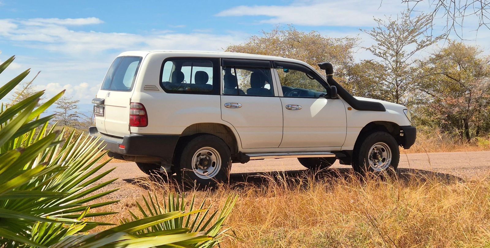
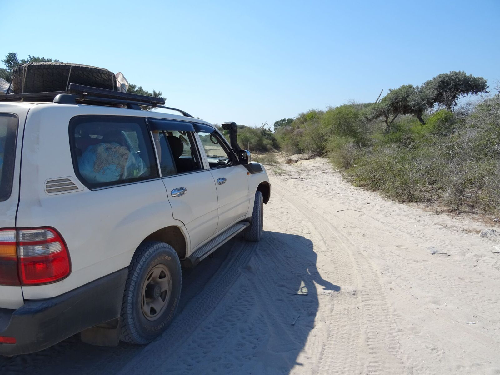
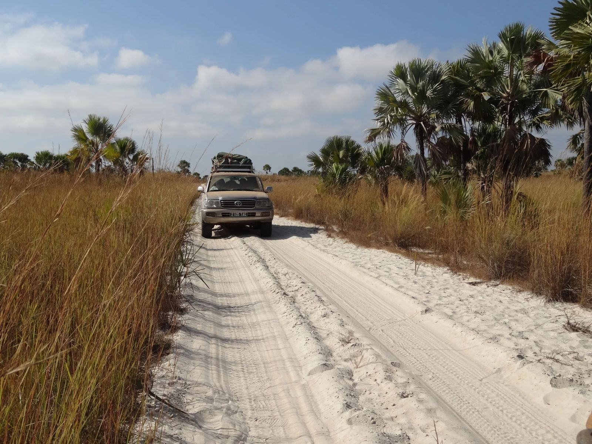
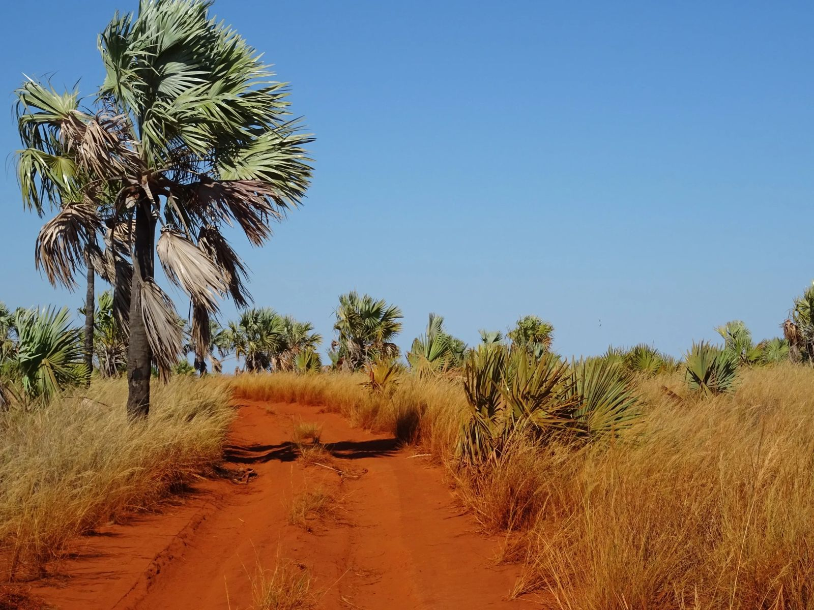
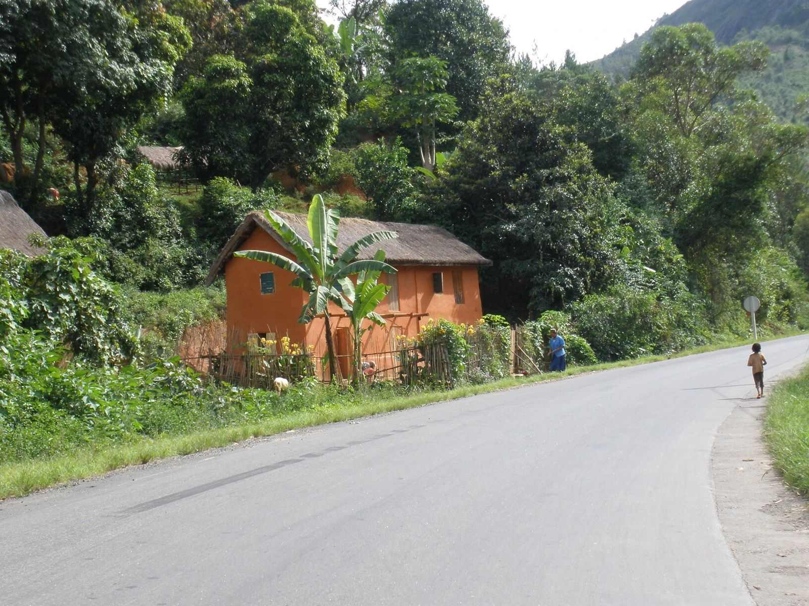
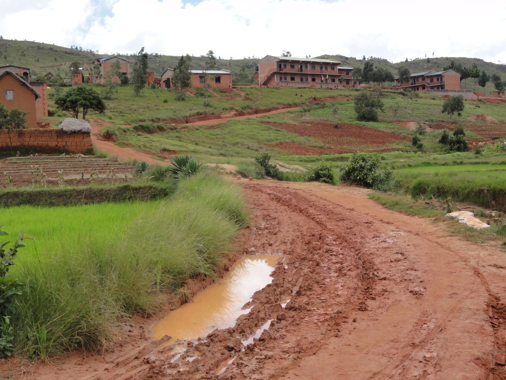
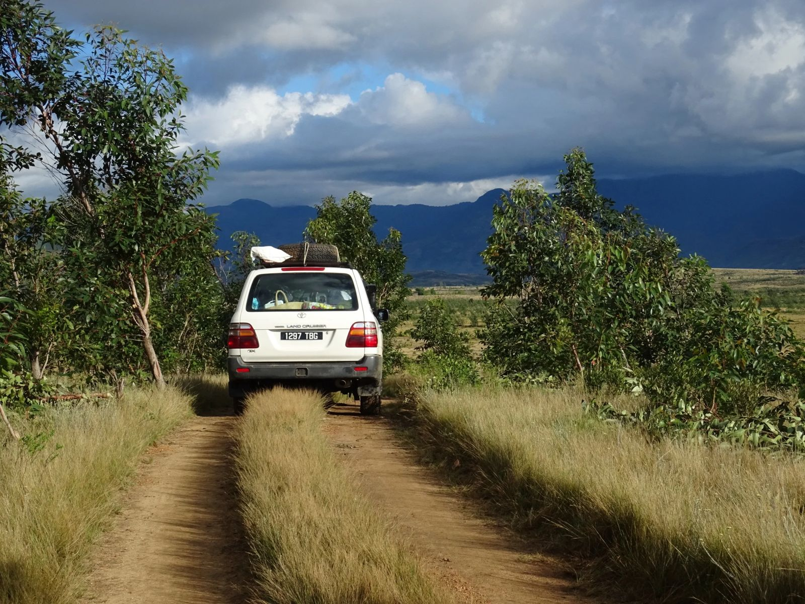
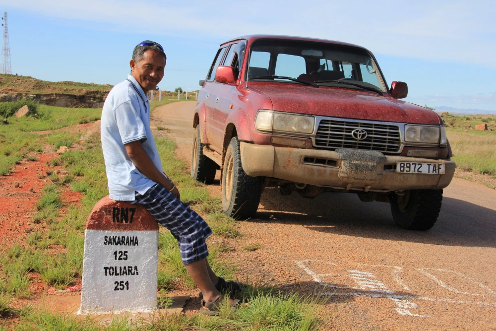
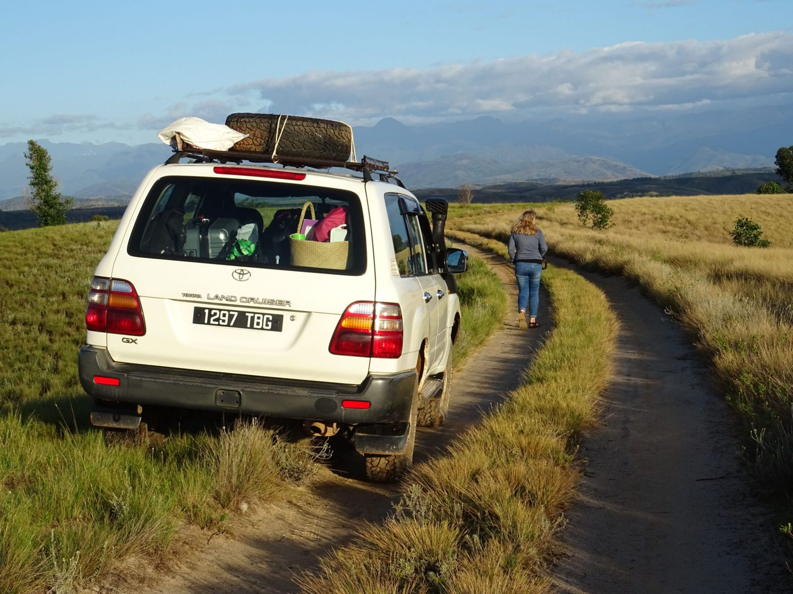

Services · Madagascar
Car Rental
Travelling safely in Madagascar, with a driver who knows the roads, the language, and the people.

PRIORI does not offer self-drive car rental, and strongly advises against it. Madagascar's roads are beautiful, but treacherous. With a driver who knows the terrain, you travel differently: safely, with a guide, an interpreter, and a travel companion who is a genuine part of the PRIORI family.
Why not self-drive?
Madagascar's roads are unpredictable
PRIORI does not offer driverless rental and strongly advises against it. Here is why.
- Winding and hazardous roads. Potholes, zebu herds, unlit ox-carts at dusk: night driving is particularly dangerous.
- No assistance in remote areas. Garages, repair shops, and breakdown services are absent from large parts of the island.
- Frequent roadside checkpoints. Between every town, police checkpoints dot the routes. Without knowing the local rules, complications, and sometimes corruption, lie in wait.
- Unreliable mapping. Signage is poor, maps often outdated, and GPS rarely useful in remote regions.

Typical conditions on Madagascar's highland routes

Sand

Laterite

Tarmac

Mud

Overgrown track
Every kind of surface: sand, laterite, tarmac, mud, and overgrown tracks
Your travel companion
Far more than a driver
Our drivers own their own vehicles and are a genuine part of the PRIORI team: we know them and their families well. Reliable, experienced, and bilingual (French and English), they are also informal guides: pointing you toward the right addresses, decoding local customs, and opening doors you would never have found on your own.

Your driver: guide, interpreter, and travel companion
In national parks, a local eco-guide remains mandatory. But on the road, your driver takes care of everything else.
How to travel
Two options
PRIORI arranges hotels, daily stages, and vehicle according to your wishes, discussed together before departure. Ideal for saving time and travelling with complete peace of mind.
Car and driver, no fixed programme. You decide where to stop, how long to stay, which hotel to choose. Total freedom, with the safety net of a professional alongside you.
Recommended for French or English speakers

Open itinerary: the road unfolds at your own pace
Transparent pricing
All- inclusive
Our rates are calculated per day, with no hidden extras. What's included:
Driver's salary, meals and accommodation fully covered.
Full vehicle coverage and petrol included throughout.
PRIORI and your driver remain reachable at any time.
Departure and return point is Antananarivo. If the journey ends in another city, the empty return trip is charged as a supplement.